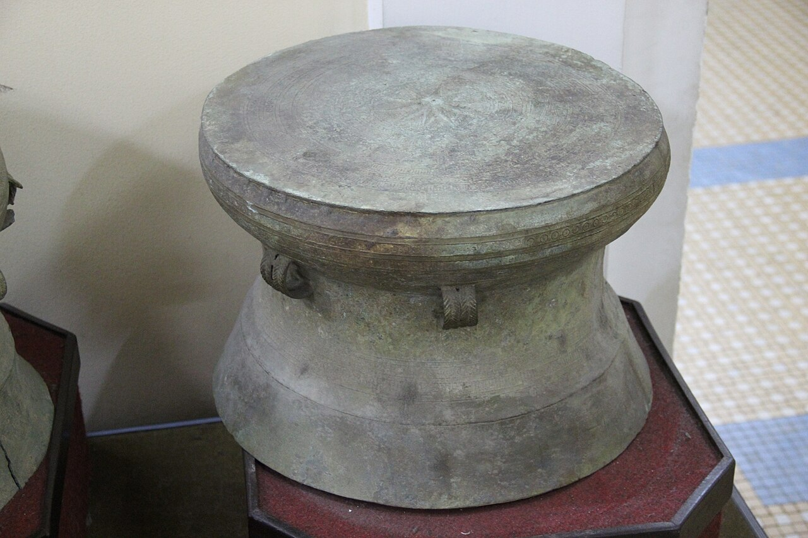
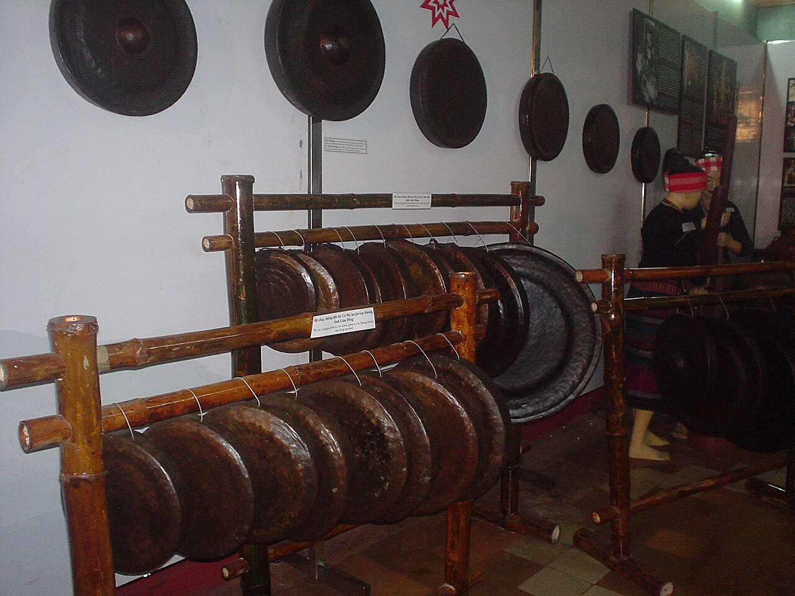
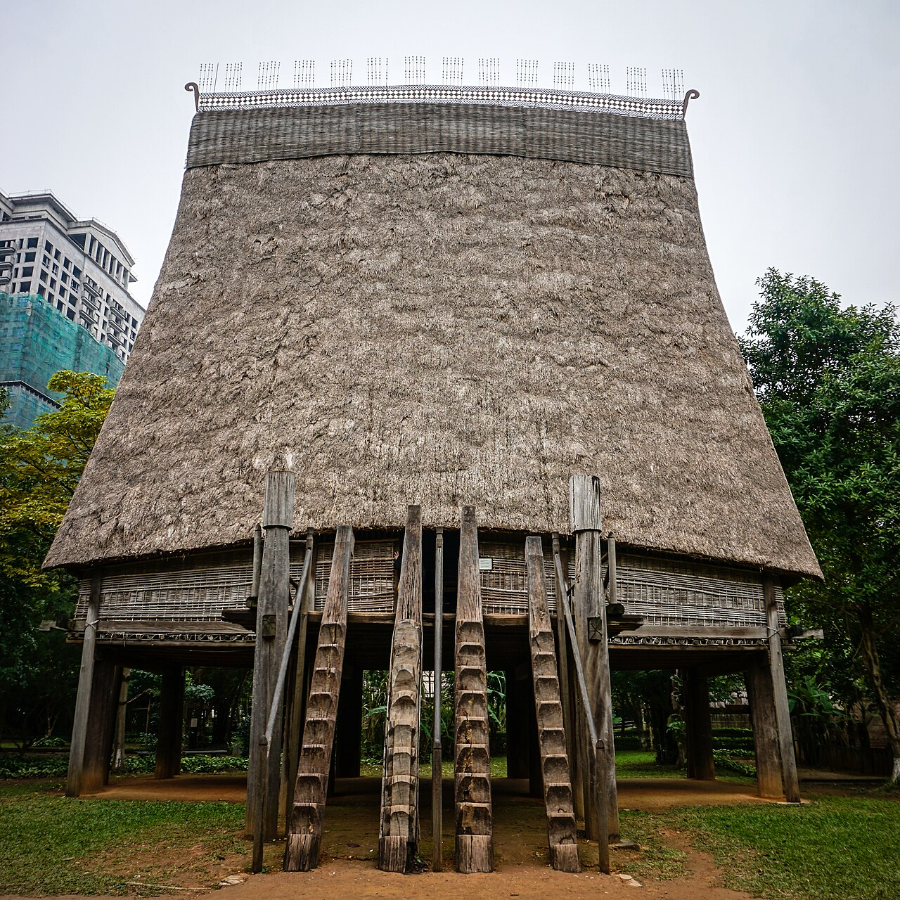
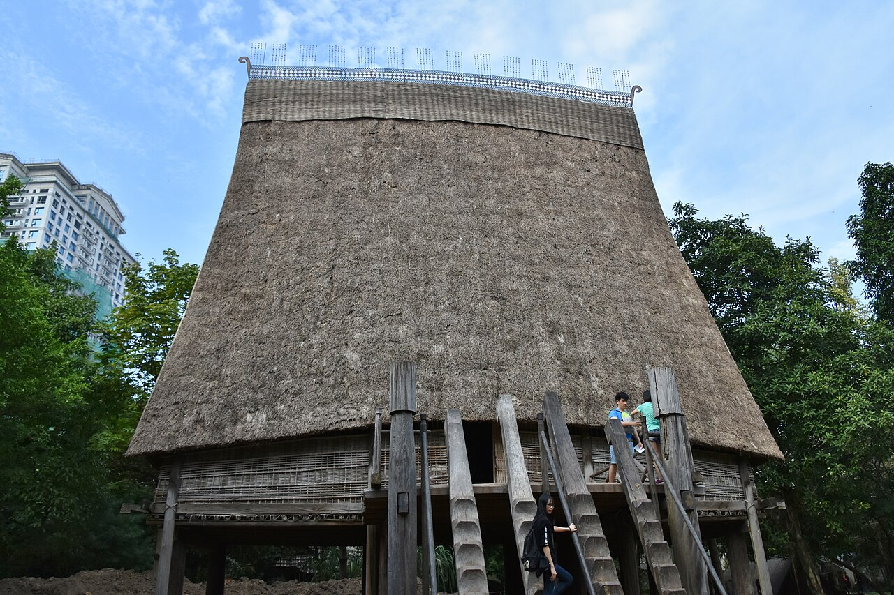
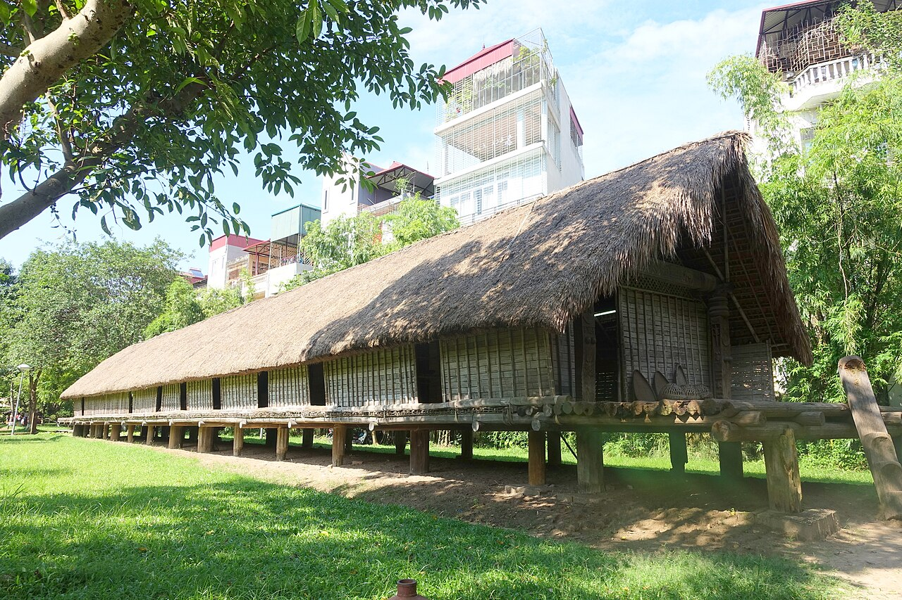
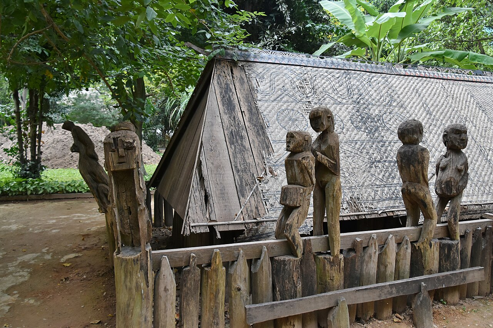
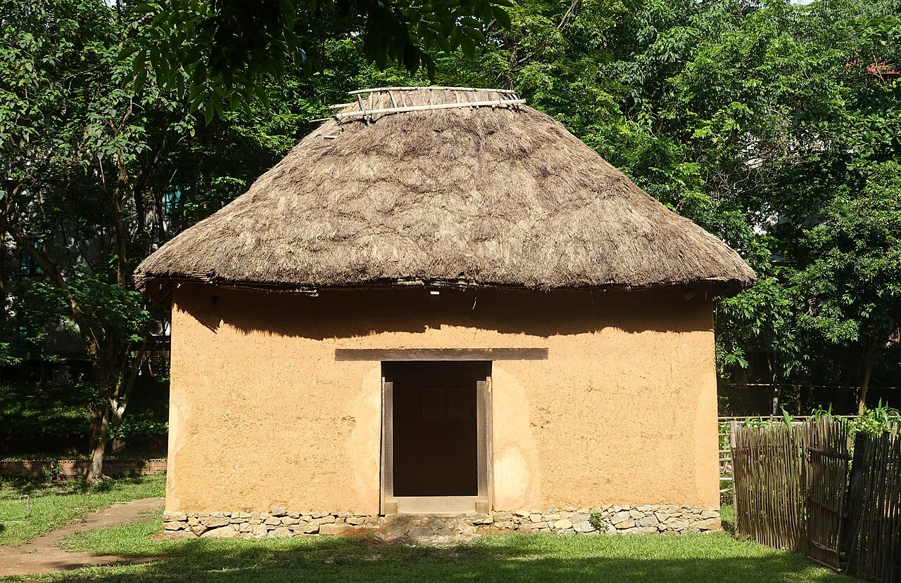
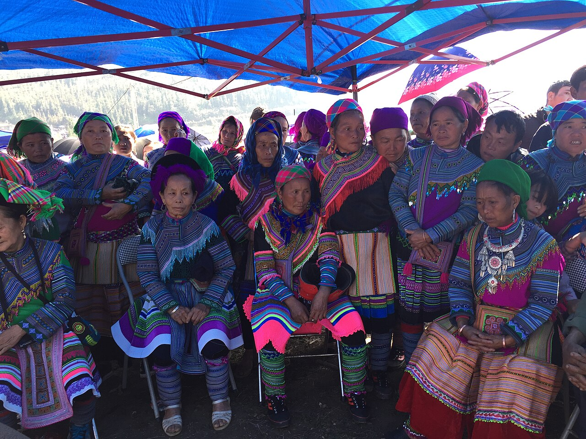

日程・集合NGÀY & ĐIỂM HẸN
開館・入場料GIỜ MỞ CỬA · VÉ
今日の天気（10月の平年）THỜI TIẾT (TB tháng 10)
今日の行程Lịch trình hôm nay
10:30 入館 → 屋内（銅鼓館）→ 休憩 → 屋外の家屋園 → 東南アジア館（凧館）→ 13:30 解散。下のバーに「いま／次」が表示されます。10:30 vào cửa → toà Trống Đồng → nghỉ → vườn kiến trúc → toà Cánh Diều (Đông Nam Á) → 13:30 kết thúc. Thanh dưới cùng hiển thị “Bây giờ / Tiếp theo”.
-
10:00 – 10:3010:05頃出発xuất phát ~10:05
ホテル → 博物館Khách sạn → Bảo tàng
🚗 Liễu Giai → Đào Tấn → Nguyễn Khánh Toàn → Nguyễn Văn Huyên~4 km · 12–20′日曜の朝は比較的空いています。Grab でも行けます（行き先「Bảo tàng Dân tộc học Việt Nam」）。
Sáng Chủ nhật đường khá thoáng. Có thể đi Grab (điểm đến “Bảo tàng Dân tộc học Việt Nam”).
💭 車内でひとことTRÊN XE昨日のニンビンで出会ったのは「キン族（ベト族）」の歴史。今日はその他の53民族に会いに行きます。Hôm qua ở Ninh Bình là lịch sử người Kinh. Hôm nay đi gặp 53 dân tộc còn lại. -
10:30 – 10:4515分 phút
到着・チケットĐến nơi · mua vé
入口でチケットを購入。館内図をもらい、集合場所（銅鼓館の前）と13:30の解散時刻を確認します。
Mua vé ở cổng, lấy sơ đồ, thống nhất điểm hẹn (trước toà Trống Đồng) và giờ kết thúc 13:30.
🚩 引率メモGHI CHÚ DẪN ĐOÀN- Mua vé cả đoàn ở cổng.
- Thuyết minh (45–60 phút/khu): tiếng Việt 200.000₫/đoàn, tiếng nước ngoài 300.000₫/đoàn; bảo tàng có hướng dẫn viên tiếng Việt và tiếng Anh, tối đa 30 người/hướng dẫn. Nên gọi đăng ký trước: 024 3756 2193 (máy lẻ 100/101).
- Chia sẻ link trang này cho cả đoàn; bật mục Nhiệm vụ khám phá.
- 入口で全員分のチケットを購入。
- 館内ガイド（1エリア45〜60分）：ベトナム語 200,000₫／団体、外国語 300,000₫／団体。ガイドはベトナム語と英語（日本語なし）→ このページで解説。事前予約推奨：024 3756 2193（内線100/101）。
- このページのリンクを共有し、探検ミッションを開いてもらう。
-
10:45 – 11:50約65分~65 phút
銅鼓館 — 54民族の常設展Toà Trống Đồng — trưng bày 54 dân tộc
🏛 屋内・2階建てtrong nhà · 2 tầng❄️ 冷房ありcó điều hoàドンソン銅鼓をかたどった建物。展示は言語グループごとに並んでいます。下の「8つの言語グループ」の順に回ると、隣の部屋が「親戚」どうしだと分かります。
Toà nhà mô phỏng trống đồng Đông Sơn. Trưng bày xếp theo nhóm ngôn ngữ — đi theo thứ tự “8 nhóm ngôn ngữ” bên dưới sẽ thấy các phòng cạnh nhau là “họ hàng”.
- 導入：54民族の分布地図・ドンソン銅鼓Mở đầu: bản đồ phân bố 54 dân tộc, trống đồng
- ベト（キン）・ムオン・トー・チュット — 稲作、水上人形、ムオンの銅鑼Việt (Kinh), Mường, Thổ, Chứt — lúa nước, rối nước, cồng Mường
- タイー・タイ・ヌン・ザイ…＋カダイ — 高床の家、藍染め、機織りTày, Thái, Nùng, Giáy… + Ka Đai — nhà sàn, nhuộm chàm, khung cửi
- モン・ザオ — 蝋染め、銀細工、刺繍、ケーン（笙）Mông, Dao — vẽ sáp ong, bạc, thêu, khèn
- チベット・ビルマ系・漢系 — ハニの棚田、ロロの銅鼓、ホア族の商いTạng–Miến, Hán — ruộng bậc thang Hà Nhì, trống đồng Lô Lô, người Hoa
- チュオンソン・中部高原 — ゴング、墓像、壺酒Trường Sơn–Tây Nguyên — cồng chiêng, tượng nhà mồ, rượu cần
- チャム・クメール（南部）— 寺院、陶器、上座部仏教Chăm, Khmer Nam Bộ — tháp, gốm, Phật giáo Nam tông
※2階建て・展示面積2,000㎡、順路は9つのパート。解説はベトナム語・フランス語・英語。設計はタイー族の建築家ハー・ドゥック・リン、1997年11月開館（シラク仏大統領が出席）。上の順番は言語グループ別の目安で、実際の順路は現地の案内に従ってください。※ 2 tầng, 2.000 m², lộ trình 9 phần, chú thích 3 thứ tiếng Việt–Pháp–Anh. KTS Hà Đức Lịnh (người Tày) thiết kế, khai trương 11/1997 (có Tổng thống Pháp Jacques Chirac). Thứ tự trên là gợi ý theo nhóm ngôn ngữ — đi theo lộ trình thực tế tại chỗ.

ドンソン銅鼓（参考写真）Trống đồng Đông Sơn (ảnh minh hoạ) 
中部高原のゴングCồng chiêng Tây Nguyên 👀 見どころĐIỂM NHẤN 衣装の「藍」と「刺繍」の違い、ゴングのセット、婚礼や葬送の展示。気になる民族は54民族図鑑でチェック ✓。 So sánh màu chàm và hoa văn thêu giữa các dân tộc, bộ cồng chiêng, nghi lễ cưới & tang. Gặp dân tộc nào thì đánh dấu ✓ trong 54 dân tộc. -
11:50 – 12:1020分 phút
ひと休みNghỉ chân

博物館の外観Ngoại cảnh bảo tàng 敷地内のカフェで休憩。軽食で昼までつなぎます（昼食は見学後を推奨）。
Nghỉ ở quán café trong khuôn viên, ăn nhẹ (bữa trưa sau khi tham quan).
-
12:10 – 13:00約50分~50 phút
屋外建築園 — 本物の家に上がるVườn kiến trúc — bước vào nhà thật
各地から移築・復元された実物大の10棟。高床の家には靴を脱いで上がれるものもあります。
10 công trình thật được di dời/phục dựng từ các vùng. Một số nhà sàn có thể cởi giày để lên.
- バナ族の共同家屋「ロン」— 天を突く高い屋根Nhà rông Ba Na — mái cao vút
- エデ族のロングハウス — 母系社会の「長い家」Nhà dài Ê Đê — ngôi nhà của chế độ mẫu hệ
- ザライ族の墓の家 — 木彫りの墓像Nhà mồ Gia Rai — tượng gỗ nhà mồ
- コートゥ族の墓の家 — 色鮮やかな彫刻Nhà mồ Cơ Tu — chạm khắc nhiều màu
- チャム族の家・キン族の家（北部農村、瓦屋根）Nhà Chăm · nhà Việt (nông thôn Bắc Bộ)
- タイー族の高床・ザオ族の家・モン族の家・ハニ族の土壁の家（版築）Nhà sàn Tày · nhà Dao · nhà Mông · nhà trình tường Hà Nhì

バナ族のロンNhà rông Ba Na 
エデ族のロングハウスNhà dài Ê Đê 
ザライ族の墓の家Nhà mồ Gia Rai 
ハニ族の土壁の家Nhà trình tường Hà Nhì 🤔 考えてみようTHỬ NGHĨ 高床の家は日本の弥生時代の高床倉庫や伊勢神宮の様式と似ています。湿気・洪水・獣への対策——稲作の暮らしが生んだ共通の知恵でしょうか？ Nhà sàn giống kho thóc thời Yayoi và kiến trúc đền Ise ở Nhật. Chống ẩm, lũ, thú dữ — phải chăng là trí tuệ chung của cư dân lúa nước? -
13:00 – 13:2525分 phút
凧館 — 東南アジアの人々Toà Cánh Diều — các dân tộc Đông Nam Á
凧の形をした新館。4階建て（4階は収蔵庫）。常設展は「東南アジアの文化」「インドネシアのガラス絵」「アジアをちらり」「世界一周」の4つ、ほかに企画展スペース。さっき見たベトナムの民族と、国境の向こうの「親戚」を見比べましょう（国境を越える親戚）。
Toà nhà hình cánh diều, 4 tầng (tầng 4 là kho). 4 trưng bày thường xuyên: Văn hoá Đông Nam Á, Tranh kính Indonesia, Một thoáng châu Á, Vòng quanh thế giới; cùng không gian trưng bày nhất thời. So sánh các dân tộc Việt Nam vừa xem với “họ hàng” bên kia biên giới (Họ hàng xuyên biên giới).
-
13:25 – 13:305分 phút
集合写真・解散Chụp ảnh nhóm · kết thúc
銅鼓館の前で集合写真。ミュージアムショップには少数民族の織物や小物があります。その後は昼食へ。
Chụp ảnh trước toà Trống Đồng. Cửa hàng lưu niệm có thổ cẩm, đồ thủ công. Sau đó đi ăn trưa.
💭 ふりかえりNHÌN LẠI今日いちばん印象に残った民族は？ その民族の「親戚」はどの国にいましたか？Dân tộc nào ấn tượng nhất hôm nay? “Họ hàng” của họ sống ở nước nào?
館内マップ — 3つのエリアSơ đồ bảo tàng — 3 khu
1997年開館。フランスの建築家と協力し、民族の「生きた文化」を見せる博物館として知られています。Khánh thành năm 1997, nổi tiếng là bảo tàng trưng bày “văn hoá sống” của các dân tộc.
🥁 銅鼓館（屋内）Toà Trống Đồng
ベトナム54民族の常設展。2階建て・2,000㎡・9パート。所要60〜75分。
Trưng bày thường xuyên 54 dân tộc Việt Nam. 2 tầng, 2.000 m², 9 phần. 60–75 phút.
🛖 建築園（屋外）Vườn kiến trúc
チャム・キン・バナ・エデ・ザライ（墓）・コートゥ（墓）・タイー・ザオ・モン・ハニの10棟と水上人形劇の池。所要45〜60分。
10 công trình: nhà Chăm, Việt, rông Ba Na, dài Ê Đê, mồ Gia Rai, mồ Cơ Tu, sàn Tày, Dao, Mông, trình tường Hà Nhì + thuỷ đình rối nước. 45–60 phút.
🪁 凧館（屋内）Toà Cánh Diều
東南アジアの文化・インドネシアのガラス絵・アジア・世界一周＋企画展。所要20〜40分。
Văn hoá Đông Nam Á · Tranh kính Indonesia · Một thoáng châu Á · Vòng quanh thế giới + trưng bày nhất thời. 20–40 phút.
🏛 エリア別ガイド🏛 Giới thiệu từng khu
🛖 建築園の10棟 — 詳しく読む🛖 10 công trình ở Vườn kiến trúc — đọc thêm
内容は博物館公式サイトによる。「もっと読む」で詳細、民族名をタップすると54民族図鑑へ。Nội dung theo trang chính thức của bảo tàng. Bấm “Đọc thêm” để xem chi tiết, bấm tên dân tộc để mở thẻ trong mục 54 dân tộc.
8つの言語グループ8 nhóm ngôn ngữ
民族は「話す言葉」で8グループ・5語族に分けられます。タップすると下の図鑑が絞り込まれます。54 dân tộc chia thành 8 nhóm ngôn ngữ thuộc 5 ngữ hệ. Chạm để lọc danh sách bên dưới.

54民族図鑑54 dân tộc Việt Nam
人口は2019年国勢調査。旗は国境の外の「親戚」がいる国。展示で出会ったら ✓ を。Dân số theo Tổng điều tra 2019. Cờ = nước có “họ hàng” của dân tộc đó. Gặp ở bảo tàng thì đánh dấu ✓.
国境を越える親戚 — 東南アジアと中国Họ hàng xuyên biên giới — Đông Nam Á & Trung Quốc
国境線は19〜20世紀に引かれたもの。山地の民族は、何百年も前から雲南・広西・ラオス・タイの山々を行き来してきました。Đường biên giới được vạch vào thế kỷ 19–20. Cư dân vùng cao đã qua lại giữa Vân Nam, Quảng Tây, Lào, Thái Lan hàng trăm năm trước đó.
表：各言語グループのうち、その国に「親戚」がいる民族の数（数字をタップで図鑑を絞り込み）。Bảng: số dân tộc trong mỗi nhóm có “họ hàng” ở nước đó (chạm số để lọc).
🇨🇳 中国南部とのつながりVới miền Nam Trung Quốc
- タイー・ヌン ↔ チワン族（壮族、中国最大の少数民族）、プイ族（布依族）Tày, Nùng ↔ Choang 壮族 (dân tộc thiểu số đông nhất TQ), Bố Y 布依族
- モン ↔ ミャオ族（苗族）、ザオ ↔ ヤオ族（瑶族）Mông ↔ Miêu 苗族, Dao ↔ Dao 瑶族
- ロロ・プーラ ↔ イ族（彝族）、ハニ ↔ ハニ族（哈尼族）、ラフ ↔ ラフ族（拉祜族）Lô Lô, Phù Lá ↔ Di 彝族; Hà Nhì ↔ 哈尼族; La Hủ ↔ 拉祜族
- コーラオ ↔ コーラオ族（仡佬族）／ キン族 ↔ 中国の「京族」（広西・東興）Cờ Lao ↔ Ngật Lão 仡佬族 · Kinh ↔ 京族 ở Đông Hưng, Quảng Tây
🌏 東南アジアとのつながりVới Đông Nam Á
- タイ・ラオ・ルー ↔ ラオス人、タイ人、シャン族（ミャンマー）Thái, Lào, Lự ↔ người Lào, người Thái Lan, Shan (Myanmar)
- クメール ↔ カンボジア。クム、カトゥ、ブル ↔ ラオスの山地民Khmer ↔ Campuchia; Khơ Mú, Cơ Tu, Bru ↔ các dân tộc vùng núi Lào
- チャム、エデ、ザライ ↔ マレー語・インドネシア語の仲間（オーストロネシア）、カンボジアのチャム族Chăm, Ê Đê, Gia Rai ↔ cùng ngữ hệ với tiếng Mã Lai, Indonesia (Nam Đảo); người Chăm ở Campuchia
- ハニ ↔ アカ族（タイ北部・ラオス・ミャンマー）、モン ↔ ラオス・タイのモン族、米国のモン系移民Hà Nhì ↔ Akha (Bắc Thái, Lào, Myanmar); Mông ↔ Hmong ở Lào, Thái, cộng đồng ở Mỹ
🇲🇲 ミャンマーとのつながりVới Myanmar
- ハニ ↔ アカ族（約20万人）、ラフ ↔ ラフ族（約15万人）、ルー ↔ タイ・ルー族（約6万人）— いずれもシャン州Hà Nhì ↔ Akha (~200.000), La Hủ ↔ Lahu (~150.000), Lự ↔ Tai Lue (~60.000) — đều ở bang Shan
- ターイ（黒タイ）↔ シャン族：民族・言語的に近いThái (Thái Đen) ↔ người Shan: gần gũi dân tộc–ngôn ngữ
- ホア族 ↔ ミャンマー華人（約164万人、福建・広東・客家・雲南系、コーカン）Hoa ↔ Hoa kiều Myanmar (~1,64 triệu: Phúc Kiến, Quảng Đông, Hakka, Vân Nam, Kokang)
- モン族（約3,000人）、ザオ（ユーミエン）、クムもミャンマーに少数居住Mông (~3.000), Dao (Iu Mien), Khơ Mú cũng có cộng đồng nhỏ ở Myanmar
- 語族レベル：モン族・パラウン族・ワ族はモン・クメール系の遠い親戚Mức ngữ hệ: người Môn, Palaung, Wa ở Myanmar là họ hàng xa của nhóm Môn–Khmer
🌐 さらに遠いつながりCác nước liên quan xa hơn
- オーストロアジア語族：インド・バングラデシュのムンダ系、マレーシアのセノイ系もモン・クメールの遠縁Ngữ hệ Nam Á: nhóm Munda ở Ấn Độ, Bangladesh và Senoi ở Malaysia là họ hàng xa của Môn–Khmer
- オーストロネシア語族：台湾の先住民から広がり、フィリピン・インドネシア・マレーシア、遠くはマダガスカルまで同じ語族Ngữ hệ Nam Đảo: lan ra từ Đài Loan đến Philippines, Indonesia, Malaysia, xa tới Madagascar
- 移民コミュニティ：アメリカ（モン、ユーミエン、ラオ、クム、クメール・クロム、チャム）、フランス（ラオ、モン、チャム）、カナダ、オーストラリアCộng đồng di cư: Mỹ (Mông, Iu Mien, Lào, Khơ Mú, Khmer Krom, Chăm), Pháp (Lào, Mông, Chăm), Canada, Úc
人数は英語版Wikipediaの各民族の記事による概数。Số người là ước tính, theo bài Wikipedia tiếng Anh của từng dân tộc.
人口と年齢 — ベトナム・中国・日本Dân số & tuổi — Việt Nam · Trung Quốc · Nhật Bản
国連「世界人口推計2024」。2023年までは推計値（実線）、2024年以降は中位推計（点線）。Liên Hợp Quốc, World Population Prospects 2024. Đến 2023 là số ước tính (nét liền), từ 2024 là dự báo phương án trung bình (nét đứt).
※タイルは国連の2026年推計。ベトナム統計局の公式値は2025年平均 1億230万人（2026年は約1億300万人の見込み）。※ Số trong ô là dự báo 2026 của LHQ. Số chính thức của Cục Thống kê: dân số trung bình 2025 là 102,3 triệu (2026 ước khoảng 103 triệu).
人口の伸び（1950年＝100）Tăng dân số (chỉ số 1950 = 100)
人口の規模が10倍以上違うため、1950年を100とした指数で比べます。なぞると実数が出ます。Quy mô dân số chênh nhau hơn 10 lần nên so bằng chỉ số (1950 = 100). Chạm/di chuột để xem số thật.
年齢の中央値（歳）Tuổi trung vị (năm)
国民を年齢順に並べたとき、ちょうど真ん中の人の年齢。Tuổi của người đứng chính giữa khi xếp toàn bộ dân số theo tuổi.
⏳ 「人口ボーナス期」は2036年頃に終わるThời kỳ “dân số vàng” kết thúc khoảng năm 2036
人口ボーナス（黄金人口構造）＝働く世代（15〜64歳）が子どもと高齢者の合計の2倍以上ある時期。統計局がUNFPAと作成した「2024–2074年人口予測」による。Cơ cấu dân số vàng: số người trong độ tuổi lao động (15–64) gấp đôi trở lên số trẻ em và người già cộng lại. Theo “Dự báo dân số Việt Nam 2024–2074” của Cục Thống kê, phối hợp UNFPA.
- 2007人口ボーナス期に入るBắt đầu thời kỳ dân số vàng
- 2023人口1億人を突破Vượt mốc 100 triệu dân
- 2025平均人口 1億230万人（前年比 約＋1%）Dân số trung bình 102,3 triệu (tăng ~1%)
- 2034「高齢社会」へ：65歳以上が14%にBước vào thời kỳ dân số già: người 65+ chiếm 14%
- 2036人口ボーナス期が終わる（2019年の予測より3年早まる）Kết thúc dân số vàng (sớm hơn 3 năm so với dự báo 2019)
- 2038生産年齢人口がピーク：約6,950万人Dân số trong độ tuổi lao động đạt đỉnh ~69,5 triệu
- 2074中位予測で約1億1,420万人Phương án trung bình: ~114,2 triệu người
※統計局の予測（2074年に1億1,420万人）と国連推計（2049年頃に約1.1億人でピーク）は前提が異なり、数字が一致しません。※ Dự báo của Cục Thống kê (114,2 triệu năm 2074) và của LHQ (đỉnh ~110 triệu khoảng 2049) dùng giả định khác nhau nên số không trùng. · Tuổi Trẻ 26/01/2026 · Nhân Dân
📋 数値の表を見る📋 Xem bảng số liệu
出典：Nguồn: UN World Population Prospects 2024 (via Our World in Data) · ベトナム国勢調査：統計総局Tổng điều tra: Tổng cục Thống kê (2019, 2009, 2025)
探検ミッションNhiệm vụ khám phá
見つけたらチェック。チェックはこのスマホにだけ保存されます。Tìm thấy thì đánh dấu. Dữ liệu chỉ lưu trên điện thoại này.
持ち物・マナー・ひとことĐồ mang theo · ứng xử · câu nói
- 現金（チケット・カフェ）Tiền mặt (vé, café)
- 帽子・日焼け止めMũ, kem chống nắng
- 水Nước uống
- 脱ぎやすい靴（高床の家）Giày dễ cởi (lên nhà sàn)
- カメラ撮影料 200,000₫／台Phí chụp ảnh 200.000₫/máy
- 学生証（学生 20,000₫）Thẻ sinh viên (20.000₫)
- スマホの充電Sạc điện thoại
- 高床の家に上がるときは靴を脱ぐ（表示に従う）。Cởi giày khi lên nhà sàn (theo biển báo).
- 墓の家（ザライ・コートゥ）は信仰の場。像に触れたり登ったりしない。Nhà mồ là không gian tâm linh — không chạm, trèo lên tượng.
- 「少数民族」より「〇〇族の人々」と名前で呼ぶのが丁寧。Gọi đúng tên dân tộc thay vì “người dân tộc” chung chung.
| Xin chào | こんにちは（ベトナム語）(tiếng Việt) |
| Dân tộc | 民族（ザン・トック）＝漢字「民族」= chữ Hán 民族 |
| Bảo tàng | 博物館（バオ・ターン）＝「宝蔵」= 寶藏 |
| Nhà sàn | 高床の家nhà sàn |
便利リンクLiên kết hữu ích
すべて新しいタブで開きますTất cả mở trong tab mới